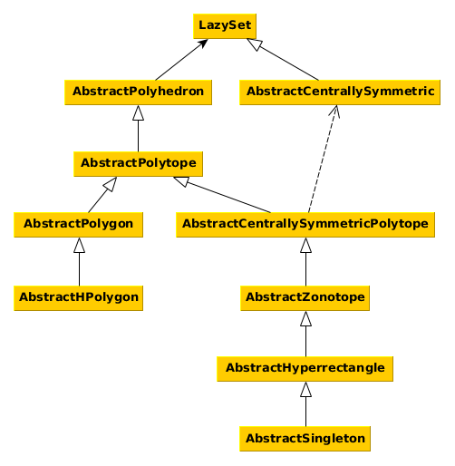

Set Interfaces
This section of the manual describes the interfaces for different set types. Every set that fits the description of an interface should also implement it. This helps in several ways:
- avoid code duplicates,
- provide functions for many sets at once,
- allow changes in the source code without changing the API.
The interface functions are outlined in the interface documentation. See Common Set Representations for implementations of the interfaces.
The naming convention is such that all interface names (with the exception of the main abstract type LazySet) should be preceded by Abstract.
The following diagram shows the interface hierarchy.

LazySet
Every convex set in this library implements this interface.
LazySets.LazySet — Type.LazySet{N}Abstract type for convex sets, i.e., sets characterized by a (possibly infinite) intersection of halfspaces, or equivalently, sets $S$ such that for any two elements $x, y ∈ S$ and $0 ≤ λ ≤ 1$ it holds that $λ·x + (1-λ)·y ∈ S$.
Notes
LazySet types should be parameterized with a type N, typically N<:Real, for using different numeric types.
Every concrete LazySet must define the following functions:
σ(d::AbstractVector{N}, S::LazySet{N}) where {N<:Real}– the support vector ofSin a given directiond; note that the numeric typeNofdandSmust be identical; for some set typesNmay be more restrictive thanRealdim(S::LazySet)::Int– the ambient dimension ofS
The subtypes of LazySet (including abstract interfaces):
julia> subtypes(LazySet, false)
18-element Array{Any,1}:
AbstractCentrallySymmetric
AbstractPolyhedron
AffineMap
CacheMinkowskiSum
CartesianProduct
CartesianProductArray
ConvexHull
ConvexHullArray
EmptySet
ExponentialMap
ExponentialProjectionMap
Intersection
IntersectionArray
LinearMap
MinkowskiSum
MinkowskiSumArray
ResetMap
TranslationIf we only consider concrete subtypes, then:
jldoctest; setup = :(using LazySets: subtypes) julia> subtypes(LazySet, true) 37-element Array{Type,1}: Ball1 Ball2 BallInf Ballp CacheMinkowskiSum CartesianProduct CartesianProductArray ConvexHull ConvexHullArray Ellipsoid EmptySet ExponentialMap ExponentialProjectionMap HPolygon HPolygonOpt HPolyhedron HPolytope HalfSpace Hyperplane Hyperrectangle Intersection IntersectionArray Interval Line LineSegment LinearMap MinkowskiSum MinkowskiSumArray ResetMap Singleton SymmetricIntervalHull Translation Universe VPolygon VPolytope ZeroSet Zonotope
Support function and support vector
Every LazySet type must define a function σ to compute the support vector.
LazySets.support_vector — Function.support_vectorAlias for the support vector σ.
LazySets.ρ — Method.ρ(d::AbstractVector{N}, S::LazySet{N})::N where {N<:Real}Evaluate the support function of a set in a given direction.
Input
d– directionS– convex set
Output
The support function of the set S for the direction d.
Notes
The numeric type of the direction and the set must be identical.
LazySets.support_function — Function.support_functionAlias for the support function ρ.
LazySets.σ — Function.σFunction to compute the support vector σ.
Other globally defined set functions
LinearAlgebra.norm — Function.norm(S::LazySet, [p]::Real=Inf)Return the norm of a convex set. It is the norm of the enclosing ball (of the given $p$-norm) of minimal volume that is centered in the origin.
Input
S– convex setp– (optional, default:Inf) norm
Output
A real number representing the norm.
LazySets.radius — Function.radius(S::LazySet, [p]::Real=Inf)Return the radius of a convex set. It is the radius of the enclosing ball (of the given $p$-norm) of minimal volume with the same center.
Input
S– convex setp– (optional, default:Inf) norm
Output
A real number representing the radius.
LazySets.diameter — Function.diameter(S::LazySet, [p]::Real=Inf)Return the diameter of a convex set. It is the maximum distance between any two elements of the set, or, equivalently, the diameter of the enclosing ball (of the given $p$-norm) of minimal volume with the same center.
Input
S– convex setp– (optional, default:Inf) norm
Output
A real number representing the diameter.
LazySets.isbounded — Method.isbounded(S::LazySet)::BoolDetermine whether a set is bounded.
Input
S– set
Output
true iff the set is bounded.
Algorithm
We check boundedness via isbounded_unit_dimensions.
LazySets.isbounded_unit_dimensions — Method.isbounded_unit_dimensions(S::LazySet{N})::Bool where {N<:Real}Determine whether a set is bounded in each unit dimension.
Input
S– set
Output
true iff the set is bounded in each unit dimension.
Algorithm
This function performs $2n$ support function checks, where $n$ is the ambient dimension of S.
LazySets.an_element — Method.an_element(S::LazySet{N}) where {N<:Real}Return some element of a convex set.
Input
S– convex set
Output
An element of a convex set.
LazySets.tosimplehrep — Method.tosimplehrep(S::LazySet)Return the simple H-representation $Ax ≤ b$ of a set from its list of linear constraints.
Input
S– set
Output
The tuple (A, b) where A is the matrix of normal directions and b is the vector of offsets.
Notes
This function only works for sets that can be represented exactly by a finite list of linear constraints. This fallback implementation relies on constraints_list(S).
LazySets.isuniversal — Method.isuniversal(X::LazySet{N}, [witness]::Bool=false
)::Union{Bool, Tuple{Bool, Vector{N}}} where {N<:Real}Check whether a given convex set is universal, and otherwise optionally compute a witness.
Input
X– convex setwitness– (optional, default:false) compute a witness if activated
Output
- If
witnessoption is deactivated:trueiff $X$ is universal - If
witnessoption is activated:(true, [])iff $X$ is universal(false, v)iff $X$ is not universal and $v ∉ X$
Notes
This is a naive fallback implementation.
LazySets.minkowski_sum — Method.minkowski_sum(P::LazySet{N}, Q::LazySet{N};
[backend]=nothing,
[algorithm]=nothing,
[prune]=true) where {N<:Real}Concrete Minkowski sum for a pair of lazy sets using their constraint representation.
Input
P– lazy setQ– another lazy setbackend– (optional, default:nothing) polyhedral computations backendalgorithm– (optional, default:nothing) algorithm to compute the elimination of variables; available options arePolyhedra.FourierMotzkin,Polyhedra.BlockElimination, andPolyhedra.ProjectGeneratorsprune– (optional, default:true) iftrue, apply a post-processing algorithm to remove redundant constraints
Output
An HPolytope that corresponds to the Minkowski sum of P and Q if both P and Q are bounded; otherwise an HPolyhedron.
Notes
This function requires that the list of constraints of both lazy sets P and Q can be obtained. After obtaining the respective lists of constraints, the minkowski_sum fucntion for polyhedral sets is used. For details see minkowski_sum(::VPolytope, ::VPolytope).
This method requires Polyhedra and CDDLib, so you have to do:
julia> using LazySets, Polyhedra, CDDLib
julia> ...
julia> minkowski_sum(P, Q)Plotting is available for general one- or two-dimensional LazySets, provided that the overapproximation using iterative refinement is available:
LazySets.plot_recipe — Method.plot_recipe(X::LazySet{N}, [ε]::N=N(PLOT_PRECISION)) where {N<:Real}Convert a convex set to a pair (x, y) of points for plotting.
Input
X– convex setε– (optional, default:PLOT_PRECISION) approximation error bound
Output
A pair (x, y) of points that can be plotted.
Notes
Plotting of unbounded sets is not implemented yet (see #576).
Algorithm
We first assert that X is bounded.
One-dimensional sets are converted to an Interval. We do not support three-dimensional or higher-dimensional sets at the moment.
For two-dimensional sets, we first compute a polygonal overapproximation. The second argument, ε, corresponds to the error in Hausdorff distance between the overapproximating set and X. The default value PLOT_PRECISION is chosen such that the unit ball in the 2-norm is approximated with reasonable accuracy. On the other hand, if you only want to produce a fast box-overapproximation of X, pass ε=Inf. Finally, we use the plot recipe for polygons.
RecipesBase.apply_recipe — Method.plot_lazyset(X::LazySet{N}, [ε]::N=N(PLOT_PRECISION); ...) where {N<:Real}Plot a convex set.
Input
X– convex setε– (optional, default:PLOT_PRECISION) approximation error bound
Notes
See plot_recipe(::LazySet{<:Real}).
For polyhedral set types (subtypes of AbstractPolyhedron), the argument ε is ignored.
Examples
julia> B = Ball2(ones(2), 0.1);
julia> plot(B, 1e-3) # default accuracy value (explicitly given for clarity)
julia> plot(B, 1e-2) # faster but less accurate than the previous callRecipesBase.apply_recipe — Method.plot_list(list::AbstractVector{VN}, [ε]::N=N(PLOT_PRECISION),
[Nφ]::Int=PLOT_POLAR_DIRECTIONS, [fast]::Bool=false; ...)
where {N<:Real, VN<:LazySet{N}}Plot a list of convex sets.
Input
list– list of convex sets (1D or 2D)ε– (optional, default:PLOT_PRECISION) approximation error boundNφ– (optional, default:PLOT_POLAR_DIRECTIONS) number of polar directions (used to plot lazy intersections)fast– (optional, default:false) switch for faster plotting but without individual plot recipes (see notes below)
Notes
For each set in the list we apply an individual plot recipe.
The option fast provides access to a faster plotting scheme where all sets in the list are first converted to polytopes and then plotted in one single run. This, however, is not suitable when plotting flat sets (line segments, singletons) because then the polytope plot recipe does not deliver good results. Hence by default we do not use this option. For plotting a large number of (non-flat) polytopes, we highly advise activating this option.
Examples
julia> B1 = BallInf(zeros(2), 0.4);
julia> B2 = BallInf(ones(2), 0.4);
julia> plot([B1, B2])Some of the sets in the list may not be plotted precisely but rather overapproximated first. The second argument ε controls the accuracy of this overapproximation.
julia> Bs = [BallInf(zeros(2), 0.4), Ball2(ones(2), 0.4)];
julia> plot(Bs, 1e-3) # default accuracy value (explicitly given for clarity)
julia> plot(Bs, 1e-2) # faster but less accurate than the previous callSet functions that override Base functions
Base.:== — Method.==(X::LazySet, Y::LazySet)Return whether two LazySets of the same type are exactly equal.
Input
X– anyLazySetY– anotherLazySetof the same type asX
Output
trueiffXis equal toY.
Notes
The check is purely syntactic and the sets need to have the same base type. For instance, X::VPolytope == Y::HPolytope returns false even if X and Y represent the same polytope. However X::HPolytope{Int64} == Y::HPolytope{Float64} is a valid comparison.
Algorithm
We recursively compare the fields of X and Y until a mismatch is found.
Examples
julia> HalfSpace([1], 1) == HalfSpace([1], 1)
true
julia> HalfSpace([1], 1) == HalfSpace([1.0], 1.0)
true
julia> Ball1([0.], 1.) == Ball2([0.], 1.)
falseBase.:≈ — Method.≈(X::LazySet, Y::LazySet)Return whether two LazySets of the same type are approximately equal.
Input
X– anyLazySetY– anotherLazySetof the same type asX
Output
trueiffXis equal toY.
Notes
The check is purely syntactic and the sets need to have the same base type. For instance, X::VPolytope ≈ Y::HPolytope returns false even if X and Y represent the same polytope. However X::HPolytope{Int64} ≈ Y::HPolytope{Float64} is a valid comparison.
Algorithm
We recursively compare the fields of X and Y until a mismatch is found.
Examples
julia> HalfSpace([1], 1) ≈ HalfSpace([1], 1)
true
julia> HalfSpace([1], 1) ≈ HalfSpace([1.00000001], 0.99999999)
true
julia> HalfSpace([1], 1) ≈ HalfSpace([1.0], 1.0)
true
julia> Ball1([0.], 1.) ≈ Ball2([0.], 1.)
falseBase.copy — Method.copy(S::LazySet)Return a deep copy of the given set by copying its values recursively.
Input
S– anyLazySet
Output
A copy of S.
Notes
This function performs a deepcopy of each field in S, resulting in a completely independent object. See the documentation of ?deepcopy for further details.
Aliases for set types
LazySets.CompactSet — Constant.CompactSetAn alias for compact set types.
Notes
Most lazy operations are not captured by this alias because whether their result is compact or not depends on the argument(s).
LazySets.NonCompactSet — Constant.NonCompactSetAn alias for non-compact set types.
Notes
Most lazy operations are not captured by this alias because whether their result is non-compact or not depends on the argument(s).
Centrally symmetric set
Centrally symmetric sets such as balls of different norms are characterized by a center. Note that there is a special interface combination Centrally symmetric polytope.
AbstractCentrallySymmetric{N<:Real} <: LazySet{N}Abstract type for centrally symmetric sets.
Notes
Every concrete AbstractCentrallySymmetric must define the following functions:
center(::AbstractCentrallySymmetric{N})::Vector{N}– return the center point
julia> subtypes(AbstractCentrallySymmetric)
3-element Array{Any,1}:
Ball2
Ballp
EllipsoidThis interface defines the following functions:
LazySets.dim — Method.dim(S::AbstractCentrallySymmetric)::IntReturn the ambient dimension of a centrally symmetric set.
Input
S– set
Output
The ambient dimension of the set.
LazySets.isbounded — Method.isbounded(S::AbstractCentrallySymmetric)::BoolDetermine whether a centrally symmetric set is bounded.
Input
S– centrally symmetric set
Output
true (since a set with a unique center must be bounded).
LazySets.an_element — Method.an_element(S::AbstractCentrallySymmetric{N})::Vector{N} where {N<:Real}Return some element of a centrally symmetric set.
Input
S– centrally symmetric set
Output
The center of the centrally symmetric set.
Base.isempty — Method.isempty(S::AbstractCentrallySymmetric)::BoolReturn if a centrally symmetric set is empty or not.
Input
S– centrally symmetric set
Output
false.
Polyhedron
A polyhedron has finitely many facets (H-representation) and is not necessarily bounded.
LazySets.AbstractPolyhedron — Type.AbstractPolyhedron{N<:Real} <: LazySet{N}Abstract type for compact convex polyhedral sets.
Notes
Every concrete AbstractPolyhedron must define the following functions:
constraints_list(::AbstractPolyhedron{N})– return a list of all facet constraints
julia> subtypes(AbstractPolyhedron)
6-element Array{Any,1}:
AbstractPolytope
HPolyhedron
HalfSpace
Hyperplane
Line
UniversePolyhedra are defined as the intersection of a finite number of closed half-spaces. As such, polyhedra are closed and convex but not necessarily bounded. Bounded polyhedra are called polytopes (see AbstractPolytope).
This interface defines the following functions:
Base.:∈ — Method.∈(x::AbstractVector{N}, P::AbstractPolyhedron{N})::Bool where {N<:Real}Check whether a given point is contained in a polyhedron.
Input
x– point/vectorP– polyhedron
Output
true iff $x ∈ P$.
Algorithm
This implementation checks if the point lies inside each defining half-space.
LazySets.constrained_dimensions — Method.constrained_dimensions(P::AbstractPolyhedron)::Vector{Int} where {N<:Real}Return the indices in which a polyhedron is constrained.
Input
P– polyhedron
Output
A vector of ascending indices i such that the polyhedron is constrained in dimension i.
Examples
A 2D polyhedron with constraint $x1 ≥ 0$ is constrained in dimension 1 only.
LazySets.linear_map — Method.linear_map(M::AbstractMatrix{N},
P::AbstractPolyhedron{N};
check_invertibility::Bool=true,
cond_tol::Number=DEFAULT_COND_TOL,
use_inv::Bool=!issparse(M)
) where {N<:Real}Concrete linear map of a polyhedron in constraint representation.
Input
M– matrixP– abstract polyhedroncheck_invertibility– (optional, deault:true) check if the linear map is invertible, in which case this function uses the matrix inverse; if the invertibility check fails, or if this flag is set tofalse, use the vertex representation to compute the linear map (see below for details)cond_tol– (optional) tolerance of matrix condition (used to check whether the matrix is invertible)use_inv– (optional, default:falseifMis sparse andtrueotherwise) whether to compute the full left division throughinv(M), or to use the left division for each vector; see below
Output
The type of the result is "as close as possible" to the the type of P. Let (m, n) be the size of M, where m ≠ n is allowed for rectangular maps.
To fix the type of the output to something different than the default value, consider post-processing the result of this function with a call to a suitable convert method.
In particular, the output depends on the type of P, on m, and the algorithm that was used:
If the vertex-based approach was used:
- If
Pis aVPolygonandm = 2then the output is aVPolygon. - If
Pis aVPolytopethen the output is aVPolytope. - Otherwise, the output is an
Intervalifm = 1, aVPolygonifm = 2and aVPolytopein other cases.
- If
If the invertibility criterion was used:
- The types of
HalfSpace,Hyperplane,LineandAbstractHPolygonare preserved. - If
Pis anAbstractPolytope, then the output is anIntervalifm = 1, anHPolygonifm = 2and anHPolytopein other cases. - Otherwise, the output is an
HPolyhedron.
- The types of
Algorithm
This function implements two algorithms for the linear map:
- If the matrix $M$ is invertible (which we check with a sufficient condition), then $y = M x$ implies $x = \text{inv}(M) y$ and we transform the constraint system $A x ≤ b$ to $A \text{inv}(M) y ≤ b$.
- Otherwise, we transform the polyhedron to vertex representation and apply the map to each vertex, returning a polyhedron in vertex representation.
Note that the vertex representation (second approach) is only available if the polyhedron is bounded. Hence we check boundedness first.
To switch off the check for invertibility, set the option check_invertibility=false. If M is not invertible and the polyhedron is unbounded, this function returns an exception.
The option use_inv lets the user control - in case M is invertible - if the full matrix inverse is computed, or only the left division on the normal vectors. Note that this helps as a workaround when M is a sparse matrix, since the inv function is not available for sparse matrices. In this case, either use the option use_inv=false or convert the type of M as in linear_map(Matrix(M), P).
Internally, this function operates at the level of the AbstractPolyhedron interface, but the actual algorithm uses dispatch on the concrete type of P, depending on the algorithm that is used:
_linear_map_vrep(M, P)if the vertex approach is used_linear_map_hrep(M, P, use_inv)if the invertibility criterion is used
New subtypes of the interface should write their own _linear_map_vrep (resp. _linear_map_hrep) for special handling of the linear map; otherwise the fallback implementation for AbstractPolyhedron is used (see below).
LazySets.minkowski_sum — Method.minkowski_sum(P::AbstractPolyhedron{N}, Q::AbstractPolyhedron{N};
[backend]=nothing,
[algorithm]=nothing,
[prune]=true) where {N<:Real}Compute the Minkowski sum between two polyhedra in constraint representation.
Input
P– polyhedron in constraint representationQ– another polyhedron in constraint representationbackend– (optional, default:nothing) polyhedral computations backendalgorithm– (optional, default:nothing) algorithm to compute the elimination of variables; available options arePolyhedra.FourierMotzkin,Polyhedra.BlockElimination, andPolyhedra.ProjectGeneratorsprune– (optional, default:true) iftrue, apply a post-processing algorithm to remove redundant constraints
Output
A polyhedron in H-representation that corresponds to the Minkowski sum of P and Q.
Notes
This method requires Polyhedra and CDDLib, so you have to do:
julia> using LazySets, Polyhedra, CDDLib
julia> ...
julia> minkowski_sum(P, Q)Algorithm
This function implements the concrete Minkowski sum by projection and variable elimination as detailed in [1]. The idea is that if we write $P$ and $Q$ in simple H-representation, that is, $P = \{x ∈ \mathbb{R}^n : Ax ≤ b \}$ and $Q = \{x ∈ \mathbb{R}^n : Cx ≤ d \}$, then their Minkowski sum can be seen as the projection onto the first $n$-dimensional coordinates of the polyhedron
This is seen by noting that $P ⊕ Q$ corresponds to the set of points $x ∈ \mathbb{R}^n$ such that $x = y + z$ with $Ay ≤ b$ and $Cz ≤ d$; hence it follows that $Ay ≤ b$ and $C(x-y) ≤ d$, and the inequality displayed above follows by considering the $2n$-dimensional space $\binom{x}{y}$. The reduction from $2n$ to $n$ variables is performed using an elimination algorithm as described next.
The elimination of variables depends on the concrete polyhedra library Polyhedra, which itself uses CDDLib for variable elimination. The available algorithms are:
Polyhedra.FourierMotzkin– computation of the projection by computing the H-representation and applying the Fourier-Motzkin elimination algorithm to itPolyhedra.BlockElimination– computation of the projection by computing the H-representation and applying the block elimination algorithm to itPolyhedra.ProjectGenerators– computation of the projection by computing the V-representation
[1] Kvasnica, Michal. "Minkowski addition of convex polytopes." (2005): 1-10.
Plotting (bounded) polyhedra is available, too:
LazySets.plot_recipe — Method.plot_recipe(P::AbstractPolyhedron{N}, [ε]::N=zero(N)) where {N<:Real}Convert a (bounded) polyhedron to a pair (x, y) of points for plotting.
Input
P– bounded polyhedronε– (optional, default:0) ignored, used for dispatch
Output
A pair (x, y) of points that can be plotted.
Algorithm
We first assert that P is bounded (i.e., that P is a polytope).
One-dimensional polytopes are converted to an Interval. Three-dimensional or higher-dimensional polytopes are not supported.
For two-dimensional polytopes (i.e., polygons) we compute their set of vertices using vertices_list and then plot the convex hull of these vertices.
Polytope
A polytope is a bounded set with finitely many vertices (V-representation) resp. facets (H-representation). Note that there is a special interface combination Centrally symmetric polytope.
LazySets.AbstractPolytope — Type.AbstractPolytope{N<:Real} <: AbstractPolyhedron{N}Abstract type for compact convex polytopic sets.
Notes
Every concrete AbstractPolytope must define the following functions:
vertices_list(::AbstractPolytope{N})::Vector{Vector{N}}– return a list of all vertices
julia> subtypes(AbstractPolytope)
4-element Array{Any,1}:
AbstractCentrallySymmetricPolytope
AbstractPolygon
HPolytope
VPolytopeA polytope is a bounded polyhedron (see AbstractPolyhedron). Polytopes are compact convex sets with either of the following equivalent properties:
- They are the intersection of a finite number of closed half-spaces.
- They are the convex hull of finitely many vertices.
This interface defines the following functions:
LazySets.isbounded — Method.isbounded(P::AbstractPolytope)::BoolDetermine whether a polytopic set is bounded.
Input
P– polytopic set
Output
true (since a polytope must be bounded).
LazySets.singleton_list — Method.singleton_list(P::AbstractPolytope{N})::Vector{Singleton{N}} where {N<:Real}Return the vertices of a polytopic set as a list of singletons.
Input
P– polytopic set
Output
List containing a singleton for each vertex.
Base.isempty — Method.isempty(P::AbstractPolytope)::BoolDetermine whether a polytope is empty.
Input
P– abstract polytope
Output
true if the given polytope contains no vertices, and false otherwise.
Algorithm
This algorithm checks whether the vertices_list of the given polytope is empty or not.
Polygon
A polygon is a two-dimensional polytope.
LazySets.AbstractPolygon — Type.AbstractPolygon{N<:Real} <: AbstractPolytope{N}Abstract type for polygons (i.e., 2D polytopes).
Notes
Every concrete AbstractPolygon must define the following functions:
tovrep(::AbstractPolygon{N})::VPolygon{N}– transform into V-representationtohrep(::AbstractPolygon{N})::S where {S<:AbstractHPolygon{N}}– transform into H-representation
julia> subtypes(AbstractPolygon)
2-element Array{Any,1}:
AbstractHPolygon
VPolygonThis interface defines the following functions:
LazySets.dim — Method.dim(P::AbstractPolygon)::IntReturn the ambient dimension of a polygon.
Input
P– polygon
Output
The ambient dimension of the polygon, which is 2.
LazySets.linear_map — Method.linear_map(M::AbstractMatrix{N},
P::AbstractPolyhedron{N};
check_invertibility::Bool=true,
cond_tol::Number=DEFAULT_COND_TOL,
use_inv::Bool=!issparse(M)
) where {N<:Real}Concrete linear map of a polyhedron in constraint representation.
Input
M– matrixP– abstract polyhedroncheck_invertibility– (optional, deault:true) check if the linear map is invertible, in which case this function uses the matrix inverse; if the invertibility check fails, or if this flag is set tofalse, use the vertex representation to compute the linear map (see below for details)cond_tol– (optional) tolerance of matrix condition (used to check whether the matrix is invertible)use_inv– (optional, default:falseifMis sparse andtrueotherwise) whether to compute the full left division throughinv(M), or to use the left division for each vector; see below
Output
The type of the result is "as close as possible" to the the type of P. Let (m, n) be the size of M, where m ≠ n is allowed for rectangular maps.
To fix the type of the output to something different than the default value, consider post-processing the result of this function with a call to a suitable convert method.
In particular, the output depends on the type of P, on m, and the algorithm that was used:
If the vertex-based approach was used:
- If
Pis aVPolygonandm = 2then the output is aVPolygon. - If
Pis aVPolytopethen the output is aVPolytope. - Otherwise, the output is an
Intervalifm = 1, aVPolygonifm = 2and aVPolytopein other cases.
- If
If the invertibility criterion was used:
- The types of
HalfSpace,Hyperplane,LineandAbstractHPolygonare preserved. - If
Pis anAbstractPolytope, then the output is anIntervalifm = 1, anHPolygonifm = 2and anHPolytopein other cases. - Otherwise, the output is an
HPolyhedron.
- The types of
Algorithm
This function implements two algorithms for the linear map:
- If the matrix $M$ is invertible (which we check with a sufficient condition), then $y = M x$ implies $x = \text{inv}(M) y$ and we transform the constraint system $A x ≤ b$ to $A \text{inv}(M) y ≤ b$.
- Otherwise, we transform the polyhedron to vertex representation and apply the map to each vertex, returning a polyhedron in vertex representation.
Note that the vertex representation (second approach) is only available if the polyhedron is bounded. Hence we check boundedness first.
To switch off the check for invertibility, set the option check_invertibility=false. If M is not invertible and the polyhedron is unbounded, this function returns an exception.
The option use_inv lets the user control - in case M is invertible - if the full matrix inverse is computed, or only the left division on the normal vectors. Note that this helps as a workaround when M is a sparse matrix, since the inv function is not available for sparse matrices. In this case, either use the option use_inv=false or convert the type of M as in linear_map(Matrix(M), P).
Internally, this function operates at the level of the AbstractPolyhedron interface, but the actual algorithm uses dispatch on the concrete type of P, depending on the algorithm that is used:
_linear_map_vrep(M, P)if the vertex approach is used_linear_map_hrep(M, P, use_inv)if the invertibility criterion is used
New subtypes of the interface should write their own _linear_map_vrep (resp. _linear_map_hrep) for special handling of the linear map; otherwise the fallback implementation for AbstractPolyhedron is used (see below).
HPolygon
An HPolygon is a polygon in H-representation (or constraint representation).
LazySets.AbstractHPolygon — Type.AbstractHPolygon{N<:Real} <: AbstractPolygon{N}Abstract type for polygons in H-representation (i.e., constraints).
Notes
All subtypes must satisfy the invariant that constraints are sorted counter-clockwise.
Every concrete AbstractHPolygon must have the following fields:
constraints::Vector{LinearConstraint{N}}– the constraints
New subtypes should be added to the convert method in order to be convertible.
julia> subtypes(AbstractHPolygon)
2-element Array{Any,1}:
HPolygon
HPolygonOptThis interface defines the following functions:
LazySets.an_element — Method.an_element(P::AbstractHPolygon{N})::Vector{N} where {N<:Real}Return some element of a polygon in constraint representation.
Input
P– polygon in constraint representation
Output
A vertex of the polygon in constraint representation (the first one in the order of the constraints).
Base.:∈ — Method.∈(x::AbstractVector{N}, P::AbstractHPolygon{N})::Bool where {N<:Real}Check whether a given 2D point is contained in a polygon in constraint representation.
Input
x– two-dimensional point/vectorP– polygon in constraint representation
Output
true iff $x ∈ P$.
Algorithm
This implementation checks if the point lies on the outside of each edge.
Base.rand — Method.rand(::Type{HPOLYGON}; [N]::Type{<:Real}=Float64, [dim]::Int=2,
[rng]::AbstractRNG=GLOBAL_RNG, [seed]::Union{Int, Nothing}=nothing,
[num_constraints]::Int=-1
)::HPOLYGON{N} where {HPOLYGON<:AbstractHPolygon}Create a random polygon in constraint representation.
Input
HPOLYGON– type for dispatchN– (optional, default:Float64) numeric typedim– (optional, default: 2) dimensionrng– (optional, default:GLOBAL_RNG) random number generatorseed– (optional, default:nothing) seed for reseedingnum_constraints– (optional, default:-1) number of constraints of the polygon (must be 3 or bigger; see comment below)
Output
A random polygon in constraint representation.
Algorithm
We create a random polygon in vertex representation and convert it to constraint representation. See rand(::Type{VPolygon}). For non-flat polygons the number of vertices and the number of constraints are identical.
LazySets.tohrep — Method.tohrep(P::HPOLYGON)::HPOLYGON where {HPOLYGON<:AbstractHPolygon}Build a contraint representation of the given polygon.
Input
P– polygon in constraint representation
Output
The identity, i.e., the same polygon instance.
LazySets.tovrep — Method.tovrep(P::AbstractHPolygon{N})::VPolygon{N} where {N<:Real}Build a vertex representation of the given polygon.
Input
P– polygon in constraint representation
Output
The same polygon but in vertex representation, a VPolygon.
LazySets.addconstraint! — Method.addconstraint!(P::AbstractHPolygon{N},
constraint::LinearConstraint{N};
[linear_search]::Bool=(length(P.constraints) <
BINARY_SEARCH_THRESHOLD),
[prune]::Bool=true
)::Nothing where {N<:Real}Add a linear constraint to a polygon in constraint representation, keeping the constraints sorted by their normal directions.
Input
P– polygon in constraint representationconstraint– linear constraint to addlinear_search– (optional, default:length(constraints) < BINARY_SEARCH_THRESHOLD) flag to choose between linear and binary searchprune– (optional, default:true) flag for removing redundant constraints in the end
Output
Nothing.
LazySets.addconstraint! — Method.addconstraint!(constraints::Vector{LC},
new_constraint::LinearConstraint{N};
[linear_search]::Bool=(length(P.constraints) <
BINARY_SEARCH_THRESHOLD),
[prune]::Bool=true
)::Nothing where {N<:Real, LC<:LinearConstraint{N}}Add a linear constraint to a sorted vector of constrains, keeping the constraints sorted by their normal directions.
Input
constraints– vector of linear constraintspolygon in constraint representationnew_constraint– linear constraint to addlinear_search– (optional, default:length(constraints) < BINARY_SEARCH_THRESHOLD) flag to choose between linear and binary searchprune– (optional, default:true) flag for removing redundant constraints in the end
Output
Nothing.
Algorithm
If prune is active, we check if the new constraint is redundant. If the constraint is not redundant, we perform the same check to the left and to the right until we find the first constraint that is not redundant.
LazySets.isredundant — Method.isredundant(cmid::LinearConstraint{N}, cright::LinearConstraint{N},
cleft::LinearConstraint{N})::Bool where {N<:Real}Check whether a linear constraint is redundant wrt. two surrounding constraints.
Input
cmid– linear constraint of concerncright– linear constraint to the right (clockwise turn)cleft– linear constraint to the left (counter-clockwise turn)
Output
true iff the constraint is redundant.
Algorithm
We first check whether the angle between the surrounding constraints is < 180°, which is a necessary condition (unless the direction is identical to one of the other two constraints). If so, we next check if the angle is 0°, in which case the constraint cmid is redundant unless it is strictly tighter than the other two constraints. If the angle is strictly between 0° and 180°, the constraint cmid is redundant if and only if the vertex defined by the other two constraints lies inside the set defined by cmid.
LazySets.remove_redundant_constraints! — Method.remove_redundant_constraints!(P::AbstractHPolygon)Remove all redundant constraints of a polygon in constraint representation.
Input
P– polygon in constraint representation
Output
The same polygon with all redundant constraints removed.
Notes
Since we only consider bounded polygons and a polygon needs at least three constraints to be bounded, we stop removing redundant constraints if there are three or less constraints left. This means that for non-bounded polygons the result may be unexpected.
Algorithm
We go through all consecutive triples of constraints and check if the one in the middle is redundant. For this we assume that the constraints are sorted.
LazySets.constraints_list — Method.constraints_list(P::AbstractHPolygon{N}) where {N<:Real}Return the list of constraints defining a polygon in H-representation.
Input
P– polygon in H-representation
Output
The list of constraints of the polygon. The implementation guarantees that the constraints are sorted counter-clockwise.
LazySets.vertices_list — Method.vertices_list(P::AbstractHPolygon{N},
apply_convex_hull::Bool=false,
check_feasibility::Bool=true
)::Vector{Vector{N}} where {N<:Real}Return the list of vertices of a polygon in constraint representation.
Input
P– polygon in constraint representationapply_convex_hull– (optional, default:false) flag to post-process the intersection of constraints with a convex hullcheck_feasibility– (optional, default:true) flag to check whether the polygon was empty (required for correctness in case of empty polygons)
Output
List of vertices.
Algorithm
We compute each vertex as the intersection of consecutive lines defined by the half-spaces. If check_feasibility is active, we then check if the constraints of the polygon were actually feasible (i.e., they pointed in the right direction). For this we compute the average of all vertices and check membership in each constraint.
LazySets.isbounded — Function.isbounded(P::AbstractHPolygon, [use_type_assumption]::Bool=true)::BoolDetermine whether a polygon in constraint representation is bounded.
Input
P– polygon in constraint representationuse_type_assumption– (optional, default:true) flag for ignoring the type assumption that polygons are bounded
Output
true if use_type_assumption is activated. Otherwise, true iff P is bounded.
Algorithm
If !use_type_assumption, we convert P to an HPolyhedron P2 and then use isbounded(P2).
Centrally symmetric polytope
A centrally symmetric polytope is a combination of two other interfaces: Centrally symmetric set and Polytope.
AbstractCentrallySymmetricPolytope{N<:Real} <: AbstractPolytope{N}Abstract type for centrally symmetric, polytopic sets. It combines the AbstractCentrallySymmetric and AbstractPolytope interfaces. Such a type combination is necessary as long as Julia does not support multiple inheritance.
Notes
Every concrete AbstractCentrallySymmetricPolytope must define the following functions:
- from
AbstractCentrallySymmetric:center(::AbstractCentrallySymmetricPolytope{N})::Vector{N}– return the center point
- from
AbstractPolytope:vertices_list(::AbstractCentrallySymmetricPolytope{N})::Vector{Vector{N}}– return a list of all vertices
julia> subtypes(AbstractCentrallySymmetricPolytope)
2-element Array{Any,1}:
AbstractZonotope
Ball1This interface defines the following functions:
LazySets.dim — Method.dim(P::AbstractCentrallySymmetricPolytope)::IntReturn the ambient dimension of a centrally symmetric, polytopic set.
Input
P– centrally symmetric, polytopic set
Output
The ambient dimension of the polytopic set.
LazySets.an_element — Method.an_element(P::AbstractCentrallySymmetricPolytope{N})::Vector{N}
where {N<:Real}Return some element of a centrally symmetric polytope.
Input
P– centrally symmetric polytope
Output
The center of the centrally symmetric polytope.
Base.isempty — Method.isempty(P::AbstractCentrallySymmetricPolytope)::BoolReturn if a centrally symmetric, polytopic set is empty or not.
Input
P– centrally symmetric, polytopic set
Output
false.
AbstractZonotope
A zonotope is a specific centrally symmetric polytope characterized by a center and a collection of generators.
LazySets.AbstractZonotope — Type.AbstractZonotope{N<:Real} <: AbstractCentrallySymmetricPolytope{N}Abstract type for zonotopic sets.
Notes
Mathematically, a zonotope is defined as the set
where $c \in \mathbb{R}^n$ is its center and $\{g_i\}_{i=1}^p$, $g_i \in \mathbb{R}^n$, is the set of generators. This characterization defines a zonotope as the finite Minkowski sum of line segments. Zonotopes can be equivalently described as the image of a unit infinity-norm ball in $\mathbb{R}^n$ by an affine transformation.
See Zonotope for a standard implementation of this interface.
Every concrete AbstractZonotope must define the following functions:
genmat(::AbstractZonotope{N})::AbstractMatrix{N}– return the generator matrixgenerators(::AbstractZonotope{N})– return an iterator over the generators
Since the functions genmat and generators can be defined in terms of each other, it is sufficient to only genuinely implement one of them and let the implementation of the other function call the fallback implementation genmat_fallback resp. generators_fallback.
julia> subtypes(AbstractZonotope)
3-element Array{Any,1}:
AbstractHyperrectangle
LineSegment
ZonotopeThis interface defines the following functions:
LazySets.ngens — Method.ngens(Z::AbstractZonotope)::IntReturn the number of generators of a zonotopic set.
Input
Z– zonotopic set
Output
An integer representing the number of generators.
LazySets.genmat_fallback — Method.genmat_fallback(Z::AbstractZonotope{N}) where {N<:Real}Fallback definition of genmat for zonotopic sets.
Input
Z– zonotopic set
Output
A matrix where each column represents one generator of Z.
LazySets.generators_fallback — Method.generators_fallback(Z::AbstractZonotope{N}) where {N<:Real}Fallback definition of generators for zonotopic sets.
Input
Z– zonotopic set
Output
An iterator over the generators of Z.
Hyperrectangle
A hyperrectangle is a special centrally symmetric polytope with axis-aligned facets.
LazySets.AbstractHyperrectangle — Type.AbstractHyperrectangle{N<:Real} <: AbstractZonotope{N}Abstract type for hyperrectangular sets.
Notes
See Hyperrectangle for a standard implementation of this interface.
Every concrete AbstractHyperrectangle must define the following functions:
radius_hyperrectangle(::AbstractHyperrectangle{N})::Vector{N}– return the hyperrectangle's radius, which is a full-dimensional vectorradius_hyperrectangle(::AbstractHyperrectangle{N}, i::Int)::N– return the hyperrectangle's radius in thei-th dimensionisflat(::AbstractHyperrectangle{N})::Bool– determine whether the hyperrectangle's radius is zero in some dimension
julia> subtypes(AbstractHyperrectangle)
5-element Array{Any,1}:
AbstractSingleton
BallInf
Hyperrectangle
Interval
SymmetricIntervalHullThis interface defines the following functions:
LinearAlgebra.norm — Function.norm(H::AbstractHyperrectangle, [p]::Real=Inf)::RealReturn the norm of a hyperrectangular set.
The norm of a hyperrectangular set is defined as the norm of the enclosing ball, of the given $p$-norm, of minimal volume that is centered in the origin.
Input
H– hyperrectangular setp– (optional, default:Inf) norm
Output
A real number representing the norm.
Algorithm
Recall that the norm is defined as
The last equality holds because the optimum of a convex function over a polytope is attained at one of its vertices.
This implementation uses the fact that the maximum is achieved in the vertex $c + \text{diag}(\text{sign}(c)) r$, for any $p$-norm, hence it suffices to take the $p$-norm of this particular vertex. This statement is proved below. Note that, in particular, there is no need to compute the $p$-norm for each vertex, which can be very expensive.
If $X$ is an axis-aligned hyperrectangle and the $n$-dimensional vectors center and radius of the hyperrectangle are denoted $c$ and $r$ respectively, then reasoning on the $2^n$ vertices we have that:
The function $x ↦ x^p$, $p > 0$, is monotonically increasing and thus the maximum of each term $|c_i + α_i r_i|^p$ is given by $|c_i + \text{sign}(c_i) r_i|^p$ for each $i$. Hence, $x^* := \text{argmax}_{x ∈ X} ‖ x ‖_p$ is the vertex $c + \text{diag}(\text{sign}(c)) r$.
LazySets.radius — Function.radius(H::AbstractHyperrectangle, [p]::Real=Inf)::RealReturn the radius of a hyperrectangular set.
Input
H– hyperrectangular setp– (optional, default:Inf) norm
Output
A real number representing the radius.
Notes
The radius is defined as the radius of the enclosing ball of the given $p$-norm of minimal volume with the same center. It is the same for all corners of a hyperrectangular set.
LazySets.σ — Method.σ(d::AbstractVector{N}, H::AbstractHyperrectangle{N}) where {N<:Real}Return the support vector of a hyperrectangular set in a given direction.
Input
d– directionH– hyperrectangular set
Output
The support vector in the given direction. If the direction has norm zero, the vertex with biggest values is returned.
LazySets.ρ — Method.ρ(d::AbstractVector{N}, H::AbstractHyperrectangle{N}) where {N<:Real}Evaluate the support function of a hyperrectangular set in a given direction.
Input
d– directionH– hyperrectangular set
Output
Evaluation of the support function in the given direction.
Base.:∈ — Method.∈(x::AbstractVector{N}, H::AbstractHyperrectangle{N})::Bool where {N<:Real}Check whether a given point is contained in a hyperrectangular set.
Input
x– point/vectorH– hyperrectangular set
Output
true iff $x ∈ H$.
Algorithm
Let $H$ be an $n$-dimensional hyperrectangular set, $c_i$ and $r_i$ be the box's center and radius and $x_i$ be the vector $x$ in dimension $i$, respectively. Then $x ∈ H$ iff $|c_i - x_i| ≤ r_i$ for all $i=1,…,n$.
LazySets.vertices_list — Method.vertices_list(H::AbstractHyperrectangle{N}
)::Vector{Vector{N}} where {N<:Real}Return the list of vertices of a hyperrectangular set.
Input
H– hyperrectangular set
Output
A list of vertices. Zeros in the radius are correctly handled, i.e., the result does not contain any duplicate vertices.
Notes
For high dimensions, it is preferable to develop a vertex_iterator approach.
Algorithm
First we identify the dimensions where H is flat, i.e., its radius is zero. We also compute the number of vertices that we have to create.
Next we create the vertices. We do this by enumerating all vectors v of length n (the dimension of H) with entries -1/0/1 and construct the corresponding vertex as follows:
For enumerating the vectors v, we modify the current v from left to right by changing entries -1 to 1, skipping entries 0, and stopping at the first entry 1 (but changing it to -1). This way we only need to change the vertex in those dimensions where v has changed, which usually is a smaller number than n.
LazySets.constraints_list — Method.constraints_list(H::AbstractHyperrectangle{N}) where {N<:Real}Return the list of constraints of an axis-aligned hyperrectangular set.
Input
H– hyperrectangular set
Output
A list of linear constraints.
LazySets.high — Method.high(H::AbstractHyperrectangle{N})::Vector{N} where {N<:Real}Return the higher coordinates of a hyperrectangular set.
Input
H– hyperrectangular set
Output
A vector with the higher coordinates of the hyperrectangular set.
LazySets.high — Method.high(H::AbstractHyperrectangle{N}, i::Int)::N where {N<:Real}Return the higher coordinate of a hyperrectangular set in a given dimension.
Input
H– hyperrectangular seti– dimension of interest
Output
The higher coordinate of the hyperrectangular set in the given dimension.
LazySets.low — Method.low(H::AbstractHyperrectangle{N})::Vector{N} where {N<:Real}Return the lower coordinates of a hyperrectangular set.
Input
H– hyperrectangular set
Output
A vector with the lower coordinates of the hyperrectangular set.
LazySets.low — Method.low(H::AbstractHyperrectangle{N}, i::Int)::N where {N<:Real}Return the lower coordinate of a hyperrectangular set in a given dimension.
Input
H– hyperrectangular seti– dimension of interest
Output
The lower coordinate of the hyperrectangular set in the given dimension.
LazySets.isflat — Method.isflat(H::AbstractHyperrectangle)::BoolDetermine whether a hyperrectangular set is flat, i.e. whether its radius is zero in some dimension.
Input
H– hyperrectangular set
Output
true iff the hyperrectangular set is flat.
Notes
For robustness with respect to floating-point inputs, this function relies on the result of isapproxzero when applied to the radius in some dimension. Hence, this function depends on the absolute zero tolerance ABSZTOL.
Base.split — Method.split(H::AbstractHyperrectangle{N}, num_blocks::AbstractVector{Int}
) where {N<:Real}Partition a hyperrectangular set into uniform sub-hyperrectangles.
Input
H– hyperrectangular setnum_blocks– number of blocks in the partition for each dimension
Output
A list of Hyperrectangles.
LazySets.generators — Method.generators(H::AbstractHyperrectangle)Return an iterator over the generators of a hyperrectangular set.
Input
H– hyperrectangular set
Output
An iterator over the generators of H.
LazySets.genmat — Method.genmat(H::AbstractHyperrectangle)
Return the generator matrix of a hyperrectangular set.
Input
H– hyperrectangular set
Output
A matrix where each column represents one generator of H.
LazySets.Arrays.rectify — Method.rectify(H::AbstractHyperrectangle)Concrete rectification of a hyperrectangular set.
Input
H– hyperrectangular set
Output
The Hyperrectangle that corresponds to the rectification of H.
Singleton
A singleton is a special hyperrectangle consisting of only one point.
LazySets.AbstractSingleton — Type.AbstractSingleton{N<:Real} <: AbstractHyperrectangle{N}Abstract type for sets with a single value.
Notes
Every concrete AbstractSingleton must define the following functions:
element(::AbstractSingleton{N})::Vector{N}– return the single elementelement(::AbstractSingleton{N}, i::Int)::N– return the single element's entry in thei-th dimension
julia> subtypes(AbstractSingleton)
2-element Array{Any,1}:
Singleton
ZeroSetThis interface defines the following functions:
LazySets.σ — Method.σ(d::AbstractVector{N}, S::AbstractSingleton{N}) where {N<:Real}Return the support vector of a set with a single value.
Input
d– directionS– set with a single value
Output
The support vector, which is the set's vector itself, irrespective of the given direction.
LazySets.ρ — Method.ρ(d::AbstractVector{N}, S::AbstractSingleton{N}) where {N<:Real}Evaluate the support function of a set with a single value in a given direction.
Input
d– directionS– set with a single value
Output
Evaluation of the support function in the given direction.
Base.:∈ — Method.∈(x::AbstractVector{N}, S::AbstractSingleton{N})::Bool where {N<:Real}Check whether a given point is contained in a set with a single value.
Input
x– point/vectorS– set with a single value
Output
true iff $x ∈ S$.
Notes
This implementation performs an exact comparison, which may be insufficient with floating point computations.
LazySets.an_element — Method.an_element(S::LazySet{N}) where {N<:Real}Return some element of a convex set.
Input
S– convex set
Output
An element of a convex set.
an_element(P::AbstractCentrallySymmetricPolytope{N})::Vector{N}
where {N<:Real}Return some element of a centrally symmetric polytope.
Input
P– centrally symmetric polytope
Output
The center of the centrally symmetric polytope.
LazySets.center — Method.center(S::AbstractSingleton{N})::Vector{N} where {N<:Real}Return the center of a set with a single value.
Input
S– set with a single value
Output
The only element of the set.
LazySets.vertices_list — Method.vertices_list(S::AbstractSingleton{N})::Vector{Vector{N}} where {N<:Real}Return the list of vertices of a set with a single value.
Input
S– set with a single value
Output
A list containing only a single vertex.
LazySets.radius_hyperrectangle — Method.radius_hyperrectangle(S::AbstractSingleton{N})::Vector{N} where {N<:Real}Return the box radius of a set with a single value in every dimension.
Input
S– set with a single value
Output
The zero vector.
LazySets.radius_hyperrectangle — Method.radius_hyperrectangle(S::AbstractSingleton{N}, i::Int)::N where {N<:Real}Return the box radius of a set with a single value in a given dimension.
Input
S– set with a single valuei– dimension of interest
Output
Zero.
LazySets.high — Method.high(S::AbstractSingleton{N})::Vector{N} where {N<:Real}Return the higher coordinates of a set with a single value.
Input
S– set with a single value
Output
A vector with the higher coordinates of the set with a single value.
LazySets.high — Method.high(S::AbstractSingleton{N}, i::Int)::N where {N<:Real}Return the higher coordinate of a set with a single value in the given dimension.
Input
S– set with a single valuei– dimension of interest
Output
The higher coordinate of the set with a single value in the given dimension.
LazySets.low — Method.low(S::AbstractSingleton{N})::Vector{N} where {N<:Real}Return the lower coordinates of a set with a single value.
Input
S– set with a single value
Output
A vector with the lower coordinates of the set with a single value.
LazySets.low — Method.low(S::AbstractSingleton{N}, i::Int)::N where {N<:Real}Return the lower coordinate of a set with a single value in the given dimension.
Input
S– set with a single valuei– dimension of interest
Output
The lower coordinate of the set with a single value in the given dimension.
LazySets.linear_map — Method.linear_map(M::AbstractMatrix{N}, S::AbstractSingleton{N}) where {N<:Real}Concrete linear map of an abstract singleton.
Input
M– matrixS– abstract singleton
Output
The abstract singleton of the same type of $S$ obtained by applying the linear map to the element in $S$.
LazySets.generators — Method.generators(S::AbstractSingleton)Return an (empty) iterator over the generators of a set with a single value.
Input
S– set with a single value
Output
An empty iterator.
LazySets.genmat — Method.genmat(S::AbstractSingleton)
Return the (empty) generator matrix of a set with a single value.
Input
S– set with a single value
Output
A matrix with no columns representing the generators of S.
LazySets.plot_recipe — Method.plot_recipe(S::AbstractSingleton{N}, [ε]::N=zero(N)) where {N<:Real}Convert a singleton to a pair (x, y) of points for plotting.
Input
S– singletonε– (optional, default:0) ignored, used for dispatch
Output
A pair (x, y) of one point that can be plotted.
RecipesBase.apply_recipe — Method.plot_singleton(S::AbstractSingleton{N}, [ε]::N=zero(N); ...) where {N<:Real}Plot a singleton.
Input
S– singletonε– (optional, default:0) ignored, used for dispatch
Examples
julia> plot(Singleton([0.5, 1.0]))